Failure Mode B
Mode B:
- Short to driver's or passenger's airbag inflator (body ground).
- Short to driver's or passenger's seat belt pretensioner (body ground).
- Short in dash sensor.
- Open in both cowl sensor contacts.
NOTE (L and LS models): Before disconnecting the battery cables, be sure you get the customer's anti-theft radio code number.
1. Before disconnecting any part of the SRS wire harness, disconnect both the negative and positive battery cables. Then install the short connectors - refer to "Short Connector Installation" procedure.
2. Connect Test Harness B (O7MAZ-SPOO5GO) between the SRS unit and SRS main harness 18-P connector.
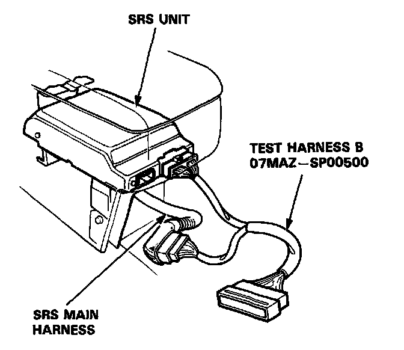
3. Reconnect the driver's airbag connector, then check continuity between the B1 terminal and body ground, and between the B7 terminal and body ground.
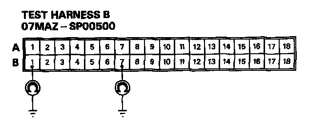
- If there is continuity at either terminal, go to step 7.
- If there is no continuity at either terminal, go to step 4.
4. Reconnect the front passenger's airbag connector, then check continuity between the B2 terminal and body ground, and between the B8 terminal and body ground.
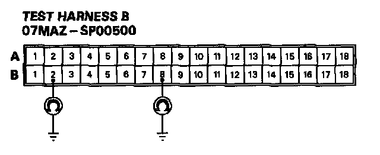
- If there is continuity at either terminal, go to step 11.
- If there is no continuity at either terminal, go to step 5.
5. Reconnect the seat belt pretensioner 3-P connector, then check continuity between body ground and each terminals of both seat belt pretensioners.
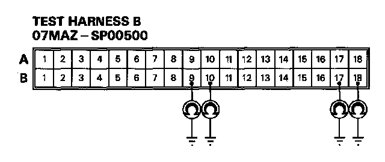
- If there is continuity at any of the terminals, go to step 13.
- If there is no continuity at any of the terminal, go to step 6.
6. Check continuity between body ground and each terminals of both dash sensors.
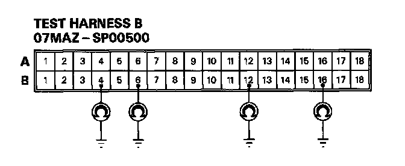
- If there is continuity at any of the terminals, go to step 17.
If there is no continuity at any of the terminal, go to step 18.
7. Disconnect the cable reel 7-P connector from the SRS main harness, then connect Test Harness C (O7MAZ-SP00600) only to the cable reel side of the 7-P connector.
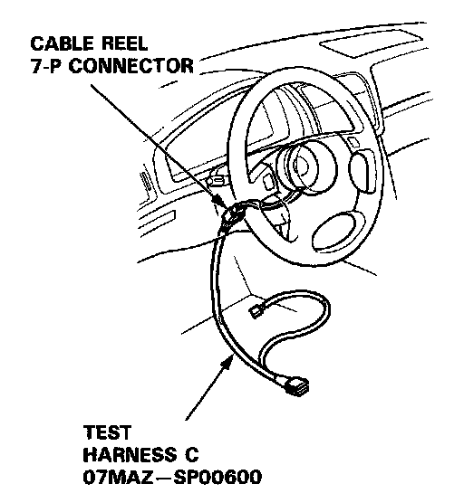
8. Check continuity between the No.4 terminal and body ground, and between the No.5 terminal and body ground.
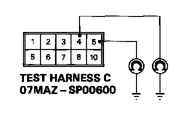
- If there is continuity at either terminal, go to step 9.
- If there is no continuity at either terminal, the SRS main harness is faulty. Replace it and recheck the voltages according to the chart in the "SRS Indicator Stays On Continuously" procedure.
9. Disconnect the driver's airbag 3-P connector from the cable reel, then connect Test Harness C to the driver's airbag 3-P connector.
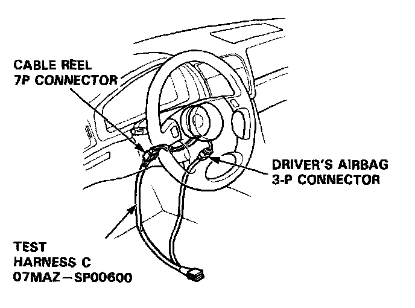
10. Check continuity between the No.9 terminal and body ground, and between the No. 10 terminal and body ground.
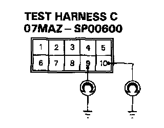
- If there is continuity at either terminal, the driver's airbag inflator is faulty. Replace it and recheck the voltages according to the chart in the "SRS Indicator Stays On Continuously" procedure.
- If there is no continuity at either terminal, the cable reel is faulty. Replace it and recheck the voltages according to the chart in the "SRS Indicator Stays On Continuously" procedure.
11. Disconnect the front passenger's airbag 3-P connector from the SRS main harness, then connect Test Harness C to the airbag side of the connector.
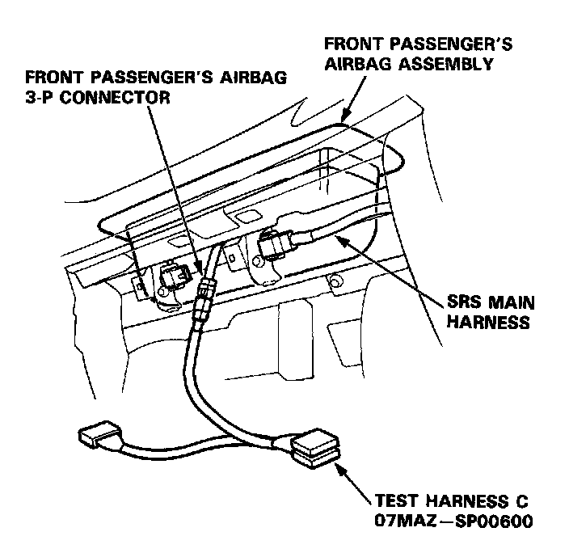
12. Check continuity between the No.9 terminal and body ground, and between the No.10 terminal and body ground.
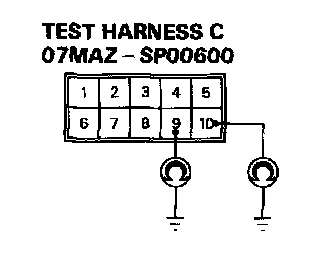
- If there is continuity at either terminal, the front passenger's airbag inflator is faulty. Replace it and recheck the voltages according to the chart in the "SRS Indicator Stays On Continuously" procedure.
- If there is no continuity at either terminal, the SRS main harness is faulty. Replace it and recheck the voltages according to the chart in the "SRS Indicator Stays On Continuously" procedure.
13. Disconnect the connector between the SRS main harness and the left side wire harness 3-P connector (driver's side), and between the SRS main harness and the car main wire harness 3-P connector (front passenger's side). First, connect Test Harness C to the left side wire harness side of the driver's pretensioner 3-P connector, and check continuity, then connect it to the car main wire harness side of the front passenger's pretensioner 3-P connector, and check continuity again.
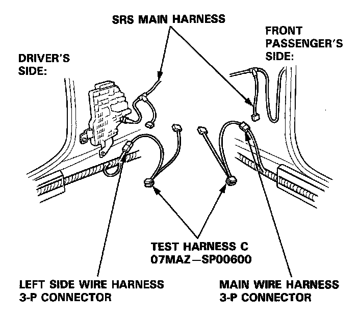
14. Check continuity between the No.9 terminal and body ground, and between the No.10 terminal and body ground.
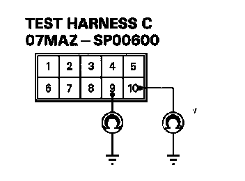
- If there is continuity at either terminal, go to step 15.
- If there is no continuity at either terminal, the SRS main harness is faulty. Replace it and recheck the voltages according to the chart in the "SRS Indicator Stays On Continuously" procedure.
15. Disconnect the 3-P connector from the driver's and front passenger's seat belt pretensioners, then connect Test Harness C to the seat belt pretensioner side of the connector, first on the driver's side, then on the passenger's side.
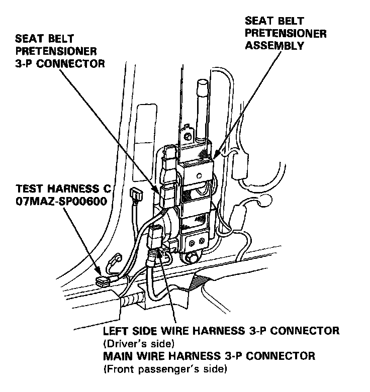
16. Check continuity between the No.9 terminal and body ground, and between the No.10 terminal and body ground.
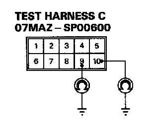
- If there is continuity at either terminal, the seat belt pretensioner is faulty. Replace it and recheck the voltages according to the chart in the "SRS Indicator Stays On Continuously" procedure.
- If there is no continuity at either terminal, the left side wire harness (driver's side) or the car main wire harness (front passenger's side) is faulty. Replace the faulty harness and recheck the voltages according to the chart in the "SRS Indicator Stays On Continuously" procedure.
17. Connect Test Harness D between the dash sensor and SRS main harness 2-P connector. Check continuity between the No.1 terminal and body ground, and between the No.2 terminal and body ground.
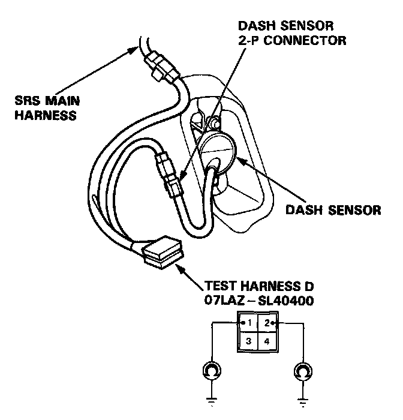
- If there is continuity at either terminal, the dash sensor is faulty. Replace it and recheck the voltages according to the chart in the "SRS Indicator Stays On Continuously" procedure.
- If there is no continuity at either terminal, the SRS main harness is faulty. Replace it and recheck the voltages according to the chart in the "SRS Indicator Stays On Continuously" procedure.
18. Check the resistance between the left dash sensor terminals B12 and B16, and between the right dash sensor terminals B4 and B6.
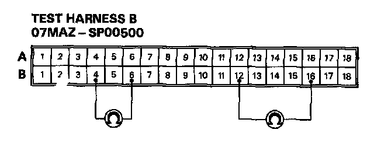
- If resistance is 3.8 - 4.2k ohms for both sensors, the SRS unit is faulty. Substitute a known-good SRS unit and recheck the voltages according to the chart in the "SRS Indicator Stays On Continuously" procedure.
- If resistance is less than 3.8k ohms for either sensor, go to step 19.
19. Connect Test Harness D between the dash sensor and SRS main harness 2-P connector. Check the resistance between the No.1 terminal and No.2 terminal.
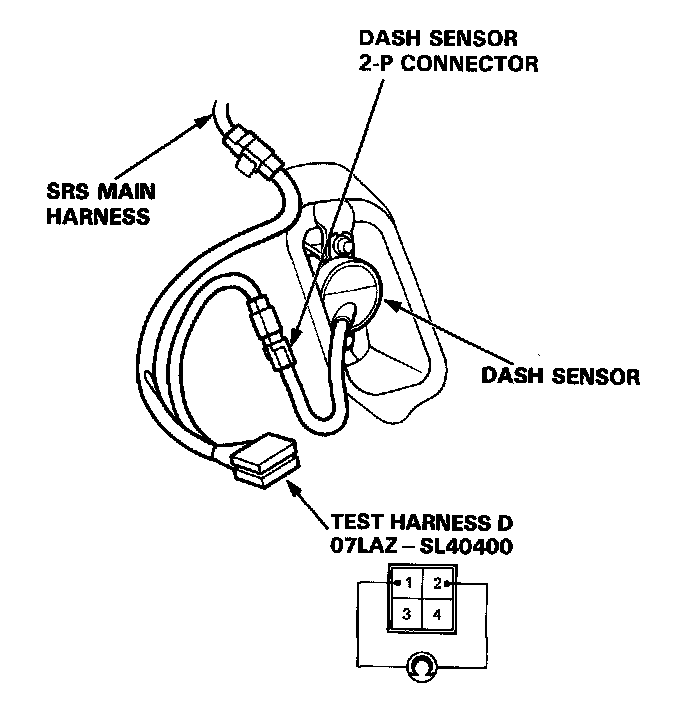
- If resistance is 3.8k - 4.2k ohms, the SRS main harness is faulty. Replace it and recheck the voltages according to the chart in the "SRS Indicator Stays On Continuously" procedure.
- If resistance is less than 3.8k ohms, the dash sensor is faulty. Replace it and recheck the voltages according to the chart in the "SRS Indicator Stays On Continuously" procedure.